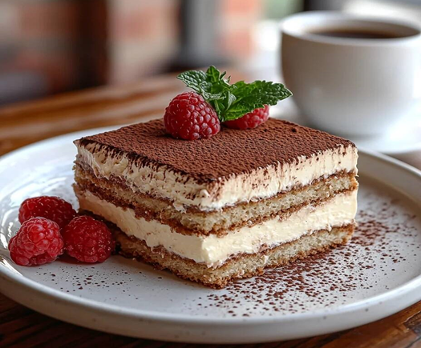

Tiramisu
|
||||
|  | ||||
| Home page | Pizza | Pasta | Tiramisu | Porchetta |
Tiramisu |
||||
| Tiramisu is a classic Italian dessert made with coffee-soaked ladyfingers (savoiardi), layered with a mixture of mascarpone cheese, eggs, sugar, and cocoa powder. It has a creamy texture, balancing the slight bitterness of coffee with the smoothness of the cheese. Tiramisu is beloved worldwide, and its name, meaning "pick me up," symbolizes the delightful experience it offers. | ||||